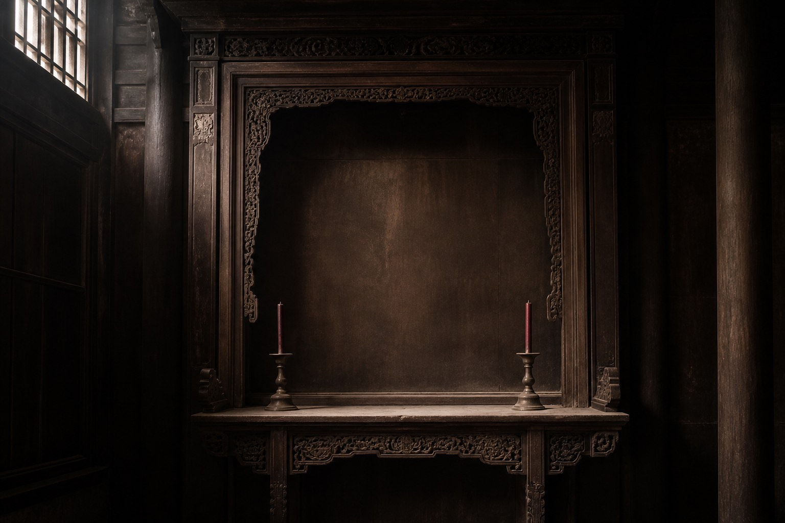

| 龛序私记 蒲敬山手订 | |
| 会首|名册|发出件 | |
图空龛照一张，无字无牌。  |
东昭：父辈。西穆：子侄或旁支。外姓另龛。继室若尚在，配氏可注在世，不可写成考妣双亡抢格。 东昭只有一格。亡父入祀，生位就让。生位要占，亡父就让。蒲敬山私记偏向长房预留，写「东昭先占，免被继室挪走」。私记不是家礼，也不是馆规。 馆里东厅借用本会说法排位，只是借用。真安位以馆窗口为准。本页照片是空龛，用来提醒格只有那么大，不是哪块牌的扫描。 |
| 私记 勿当谱牒 | |